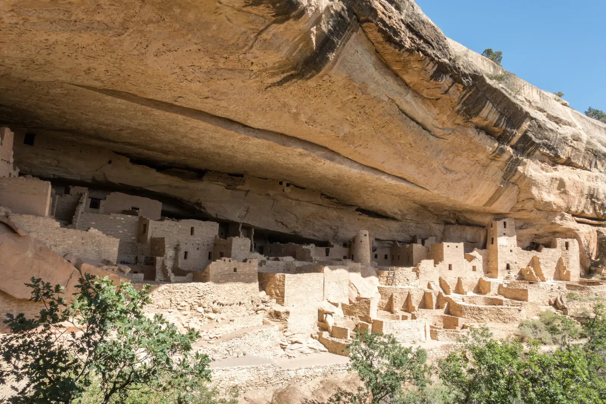

Storm Light
Four states meet at a single point in the desert, and the last leg of my nine-day road trip wandered through the country around it. After days of red rock, Telluride was a shock of green. The town sits at the head of a glacier-carved box canyon, and from high above it I watched the valley run off toward blue ridges under a sky full of fat summer clouds. Then the road dropped south, out of the mountains and onto the plateau.
Mesa Verde is Spanish for “green table,” and the name fits: a flat, forested plateau sliced open by deep canyons. The real surprise hides under the rims. In the late 1100s and 1200s the Ancestral Puebloans built whole villages of sandstone blocks beneath the overhangs, and by about 1300 they had moved on. Cliff Palace, the largest of them, has around 150 rooms and 23 kivas, the round sunken chambers used for ceremonies and gatherings. You can only go inside on a ranger-led tour, so get tickets early. I stood at the edge of one kiva and looked down into it, and it floored me that the village had already been empty for nearly two centuries before Columbus ever sailed. What will be left of our own towns in eight hundred years?


After the close quarters of the canyons, Monument Valley felt like someone had taken the ceiling off. The tribal park straddles the Utah-Arizona line inside the Navajo Nation. Its buttes are the leftovers of a plateau that wind and water have been carrying off for millions of years, and they rise straight out of a flat red desert, each one far bigger than the postcards let on. A pale haze, probably wildfire smoke, softened everything behind them, and the far mesas faded layer by layer into pink. By evening a storm was building. The sun slipped under the cloud deck and lit its belly orange, and the buttes (West Mitten and Merrick Butte, I think) went from red to brown to black cutouts against the sky.
The next day brought two more famous holes in the ground. At Horseshoe Bend, outside Page, Arizona, the Colorado River swings around a sandstone peninsula in a tight U, roughly a thousand feet below the rim. When I went there was no railing, only bare rock and a very long way down! The Grand Canyon came next, its far rim dissolving into the same haze while the near walls stayed striped in cream, rust and pink. Then the road bent west toward Las Vegas. Five stops in three days was far too fast. Each of them deserves a week.